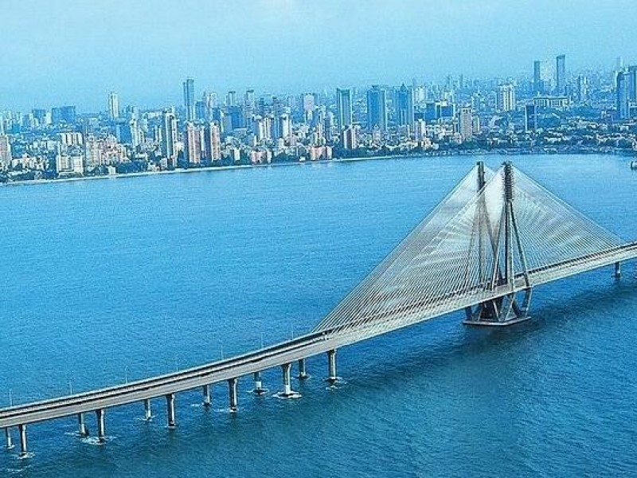

1 / 3

Caption Text
1 / 3

Caption Text
2 / 3
Caption Two
3 / 3
Caption Three
Marina Beach is a natural urban beach in the city of Chennai, India, along the Bay of Bengal. The beach runs from near Fort St. George in the north to Foreshore Estate in the south, a distance of 6.45 km, making it the longest natural urban beach in the country and one of the world's longest beach ranking with 1. The Marina is primarily sandy, unlike the short, rocky formations that make up the Juhu Beach in Mumbai. The average width of the beach is 300 m and the width at the widest stretch is 437 m. Bathing and swimming at the Marina Beach are legally prohibited because of the dangers, as the undercurrent is very turbulent. It is one of the most crowded beaches in the country and attracts about 30,000 visitors a day during weekdays and 50,000 visitors a day during the weekends and on holidays. During summer months, about 15,000 to 20,000 people visit the beach daily.
Semmozhi Poonga is a botanical garden in Chennai set up by the horticulture department of the Government of Tamil Nadu. The garden was opened on 24 November 2010 by then chief Minister Dr.M. Karunanidhi and is the first botanical garden in the city. The garden is located in the Cathedral Road–Anna Salai junction, opposite the American Consulate, on the erstwhile Drive-in Woodlands Hotel. Encompassing an area of 20 acres, it was built at a cost of 80 million. More than 500 species of plants are being grown in the area, in addition to the 80 trees that was already in existence during the development of the park, some of them being more than 100 years old. The garden houses some of the popular exotic flora and rare plant species, medicinal and aromatic herbs. Many of the exotic plants are imported from countries like China and Thailand, including a plethora of bonsai varieties of ficus microcarpa and ficus ginseng.
India with official port operations beginning in 1881, although maritime trade started much earlier in 1639 on the undeveloped shore. It is an artificial and all-weather port with wet docks. Once a major travel port, it become a major container port in the post-Independence era. The port remains a primary reason for the economic growth of Tamil Nadu, especially for the manufacturing boom in South India, and has contributed greatly to the development of the city. It is due of the existence of the port that the city of Chennai eventually became known as the Gateway of South India. The port has become a hub port for containers, cars and project cargo in the east coast of India. From handling a meagre volume of cargo in the early years of its existence, consisting chiefly of imports of oil and motors and the export of groundnuts, granite and ores, the port has started handling more than 60 million tonnes of cargo in recent years. In 2008, the port's container traffic crossed 1 million twenty-foot equivalent units. It is currently ranked the 86th largest container port in the world and there are plans to expand the capacity to about 140 million tonnes per annum. It is an ISO 14001:2004 and ISPS-certified port and has become a main line port having direct connectivity to more than 50 ports around the world.